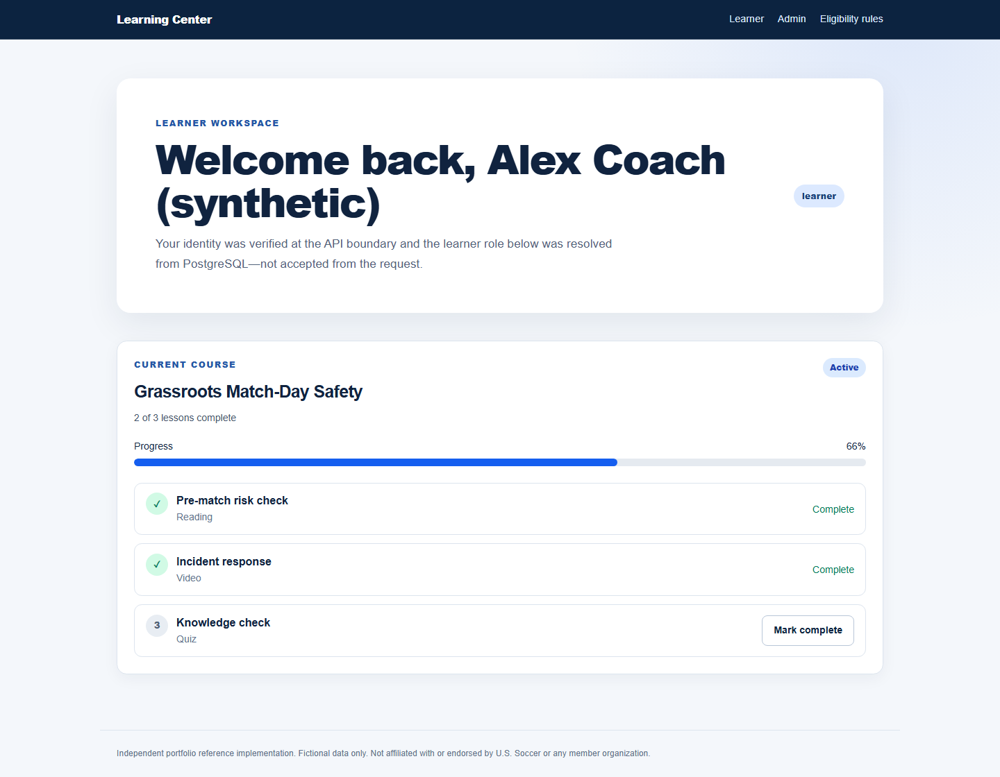
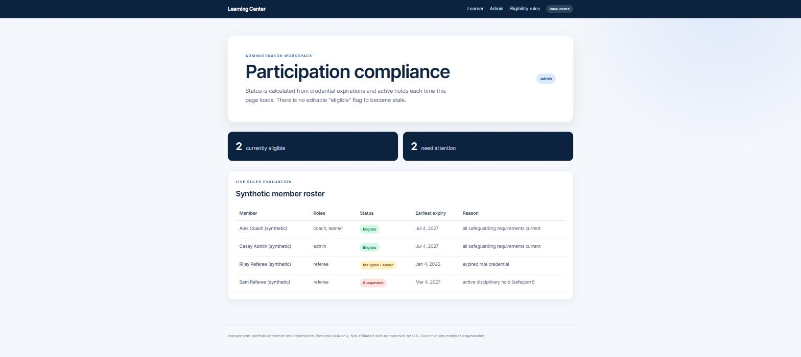

Learning Center Reference
A static tour with screenshots. The application itself is not hosted; the repository is nick-bellows/learning-center-reference.
A reference implementation of one hard product problem: education progress and participation eligibility have to remain traceable as roles, credentials, expirations, and holds change. A Go API, a Next.js front end, PostgreSQL, and an OIDC boundary carry a learner workflow (authenticate, resolve a database role, browse a course, enroll, complete ordered lessons, see persisted progress) and an administrator workflow (inspect eligibility derived live from safeguarding and credential records). Roles come from PostgreSQL, not token claims; eligibility is never stored, only recalculated.
Independent portfolio project. Not affiliated with, endorsed by, or containing data from U.S. Soccer or any member organization. The federation is fictional and every name and record is synthetic.
Walkthrough
scripts/record-screencast.ps1; nothing is hosted.

What is verified
- API unit and integration tests run with
go vetandgo test; the integration tests require the local PostgreSQL database. - Web checks: lint, build, and automated axe WCAG A/AA tests (
npm run test:a11y). - CI (five jobs:
api,web,e2e,oidc-e2e,secret-scan) starts the complete Compose stack and exercises authentication failures, role boundaries, enrollment retry behavior, ordered progress, dashboard persistence, projection drift detection and rebuild, the admin view, all five rendered routes plus the 404 page, and, under the OIDC overlay, the signed-out, refused, and error states at desktop and phone width. - The browser OIDC boundary is tested on its failure paths: a happy path and 16 negative paths
(tampered, forged, expired, and token-less session cookies; bad callbacks; replayed codes; hostile
returnTovalues) inweb/tests/auth*.spec.ts. - Every handler status and body, including
429,500, and503, is checked againstapi/openapi.yamlinopenapi_conformance_test.go. - Automated axe checks catch only a subset of accessibility issues; a manual review remains necessary before any WCAG conformance claim, and it has not been run yet.
Read the code
- README: claims, quick start, verification commands, and limitations
- api/: Go service, OpenAPI contract, OIDC adapter, domain/store code, migrations
- web/: Next.js/TypeScript learner and administrator experiences, Playwright and axe tests
- docs/decisions: architecture decision records
- ROADMAP: status snapshot, completed and open items, stop conditions